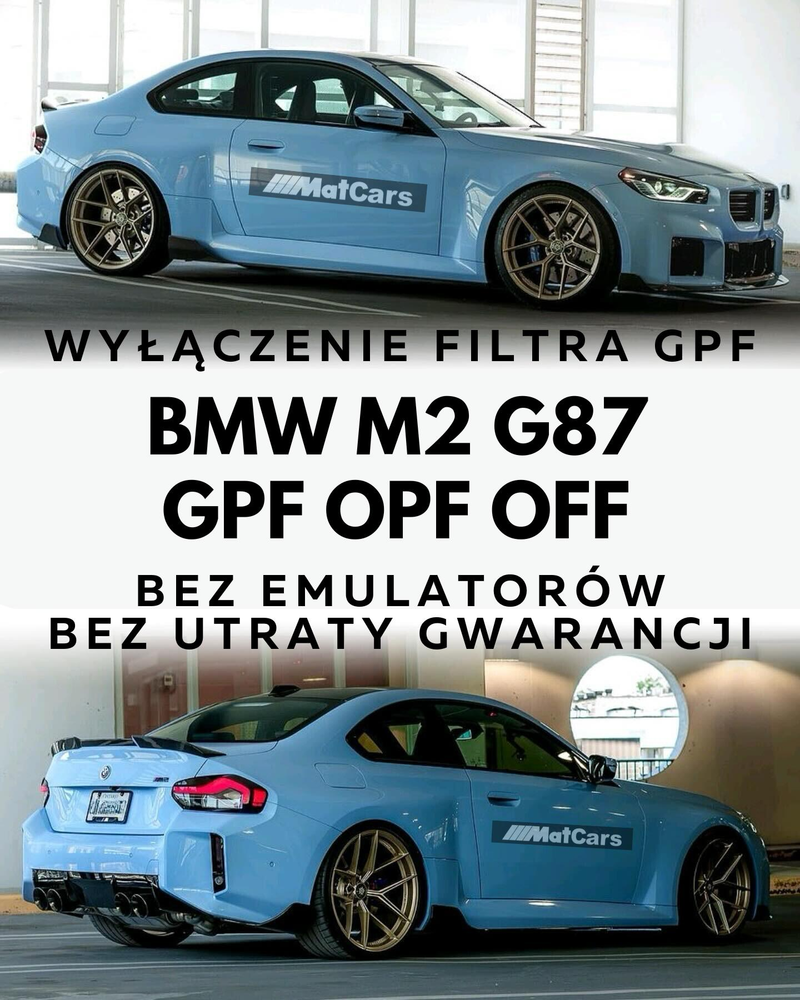
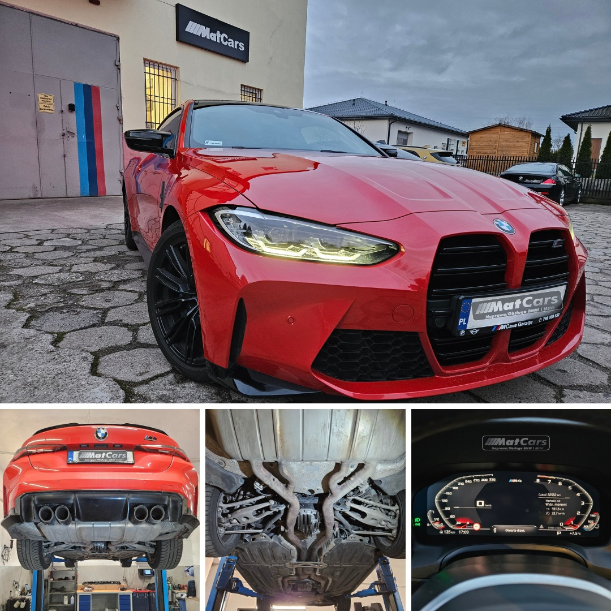
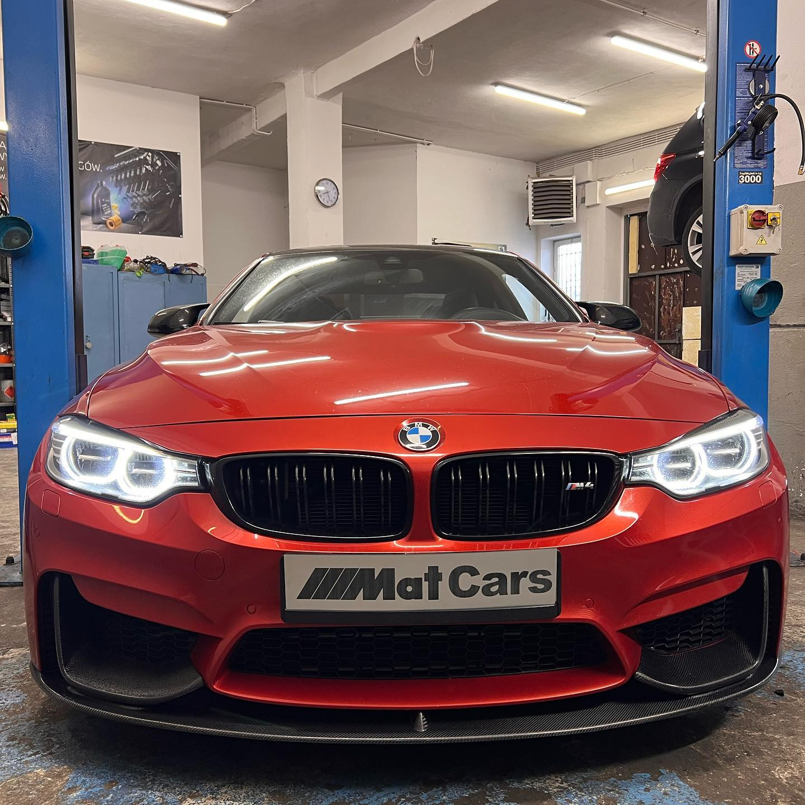

Naprawa/Obsługa BMW i MINI
Naprawa/Obsługa BMW i MINI
Pasja – to najważniejszy fundament tego warsztatu. Ludzie – to dzięki nim to miejsce jest wyjątkowe i profesjonalne. Nasz warsztat powstał z myślą o spełnianiu własnych marzeń i realizowaniu hobby w miejscu pracy. To połączenie, to strzał w 10! Jesteśmy na rynku od ponad 10 lat a w branży ponad 20. Świadczymy kompleksowe usługi naprawy i obsługi samochodów marki BMW i MINI. Wieloletnie doświadczenie zdobywane w ASO i na szkoleniach pozwala nam rzetelnie, profesjonalnie i z dbałością o każdy szczegół realizować się w naprawach tej marki. Każdego dnia stawiamy czoła nowym wyzwaniom a każde z nich utwierdza nas w przekonaniu, że to miejsce, w którym jesteśmy, to nasze miejsce.
Nasz zespół to specjaliści w naprawach BMW i MINI, którzy doskonale znają specyfikę i technologię marki. Korzystamy z nowoczesnych narzędzi diagnostycznych oraz oryginalnych części, aby zapewnić Twojemu BMW niezawodność i najlepszą jakość. Każdego dnia przybywa nam zadowolonych Klientów, a to naszym zdaniem, najlepsza rekomendacja.
W tej sekcji przedstawiamy nasze dotychczasowe realizacje. Zajmujemy się profesjonalną naprawą i modyfikacją pojazdów marki BMW.

Opis realizacji...

Opis realizacji...

Opis realizacji...
Znajdujemy się w centrum Starych Babic ul. Warszawska 302. Dogodny dojazd z Bemowa (5 km), Ożarowa Mazowieckiego (4 km), trasy ekspresowej S8 (5 km), Leszna (10 km).
Na każde pytanie odpowiemy tak szybko, jak będzie to możliwe. Zadzwoń lub napisz.
Adres: Warszawska 302, 05-082 Stare Babice
Telefon: 515 857 254
Godziny otwarcia: